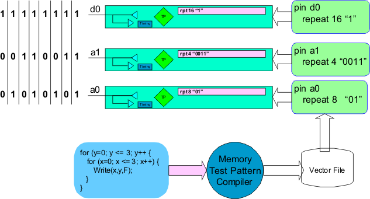
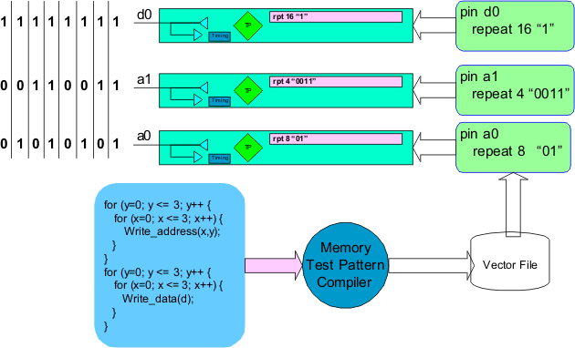
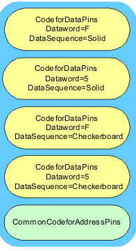

Defining memory test patterns with multiple data words
In the memory test language it is possible to create multiple versions of a pattern each with a different data word and data sequence definition. This section will introduce the methodology for how this is done.
Once an memory test pattern has been written it needs to be compiled into a vector file that contains per pin subroutines. This means that the compiler will create different executable code containing repeat instructions for each pin defined in the pattern (see following figure).

When the compiler is executed it actually compiles the code once for each pin. The memory test language syntax allows multiple sets of the for loops to be defined. Each for loop with a different set of pins defined in the body of the for loops as shown in the following figure.

The vector file created by the compiler is the same for both of the previous cases. This is because when the compiler is compiling the address pins it only compiles the for loops which contain references to the address pins and ignores for loops which contain reference to the data pins. Likewise when the compiler is compiling the data pins it only compiles the for loops which contain references to the data pins and ignores for loops which contain reference to the address pins.
With the memory test compiler a vector file can be created which contains multiple memory test pattern routines each executing the same memory test pattern but with a different data word and/or data sequence. Each memory test pattern would execute the same way for the address pins but the data pins would execute differently depending on which routine was chosen for execution.
The memory test language allows the user to efficiently define a common set of FOR loops that define the address stepping for the pattern. The user can then create a separate set of for loops for the data pins. Each set would define the data pin code for each desired set of data word and data sequence combination. The only restriction is that each set of for loop definitions must execute the same number of test system cycles. This generalized concept is illustrated in the figure below.
